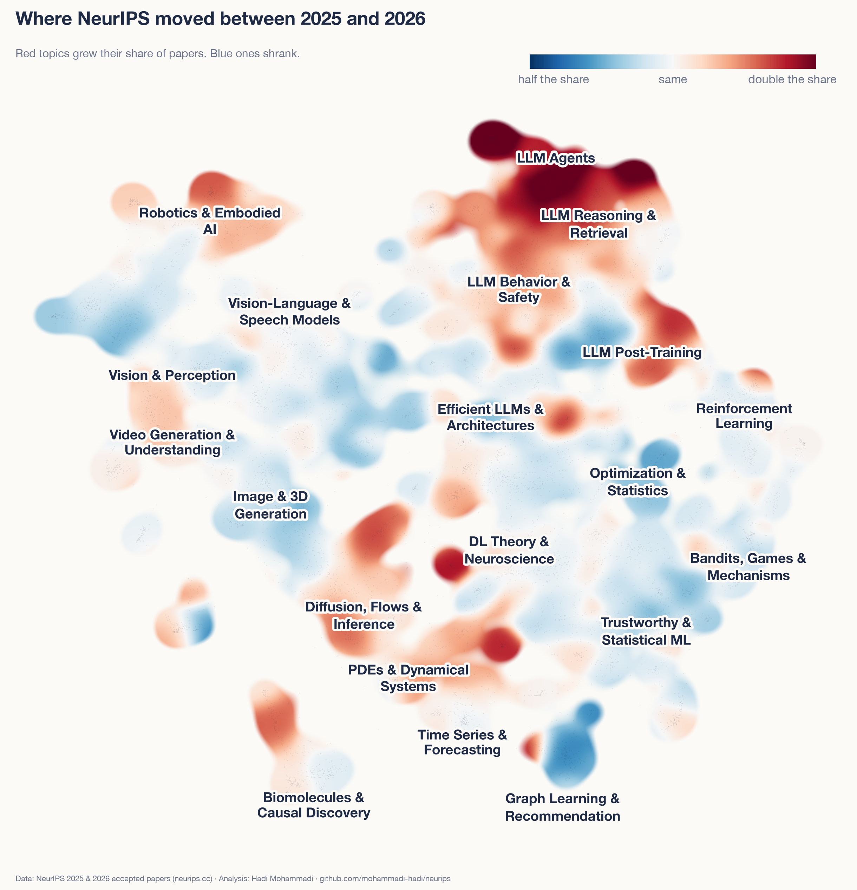
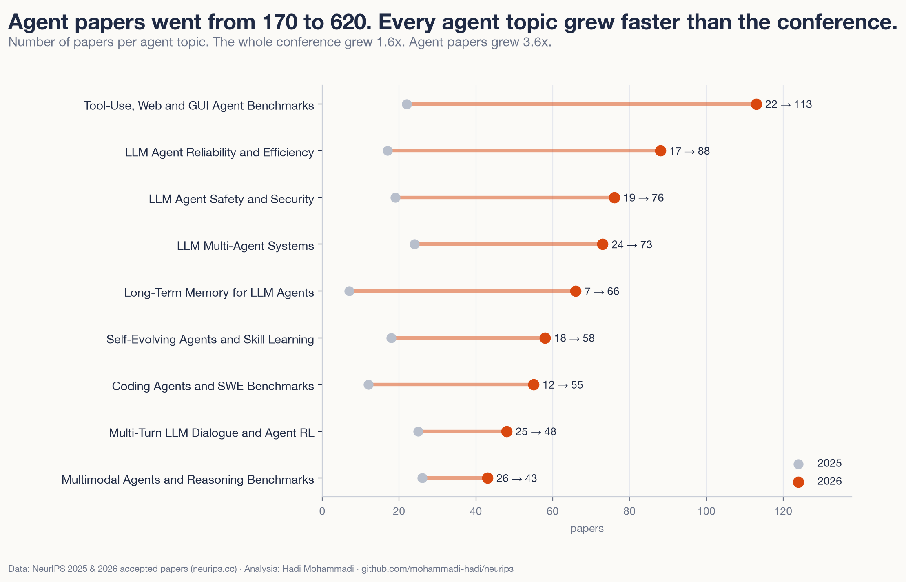
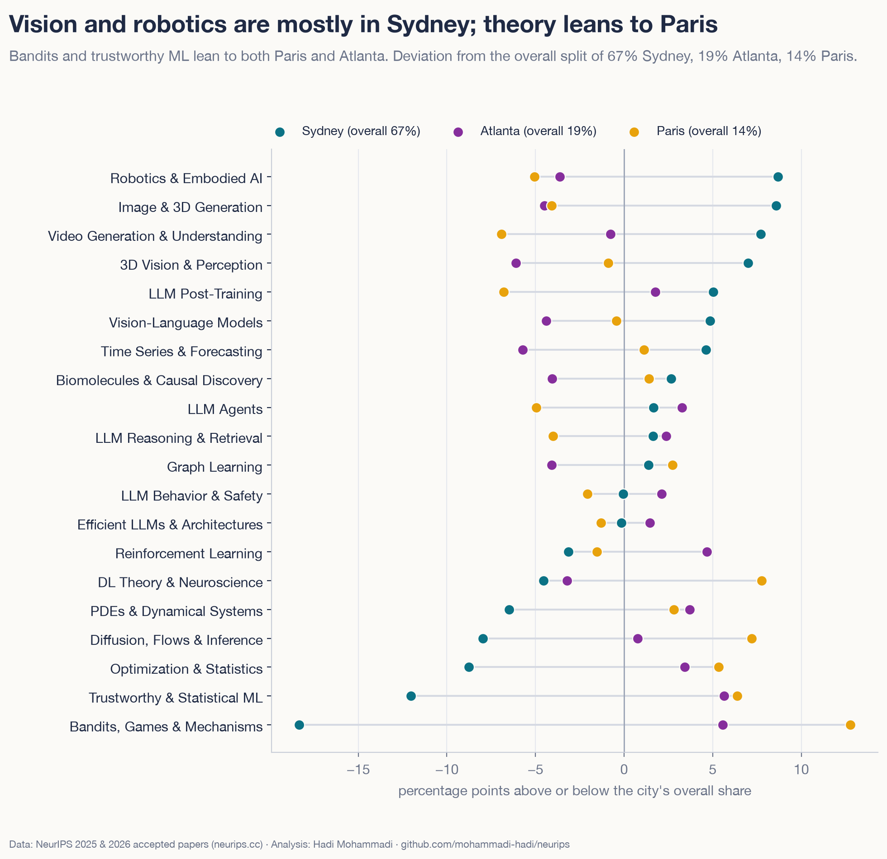

What 9,110 NeurIPS 2026 papers are about
Every NeurIPS 2026 paper on one map, and what changed since 2025.
NeurIPS 2026 has 9,110 papers, 56% more than last year. I put all of them on one map and compared them with the 5,856 papers from 2025. The big story is agents.

Each dot is a paper. Search the map, zoom in, or click any paper to see the city, day and time of its poster and go straight to the paper.
What changed
- LLM agents went from 2.9% of papers to 6.8%. That is 620 papers, and no other area moved more than 2 percentage points.
- Six of the ten topics that grew most are about agents: testing them, making them reliable, memory, safety, coding and teams of agents.
- "Benchmark" is in the title or abstract of 38% of papers, up from 32%.
- Graph neural networks fell from 2.5% to 1.4% of papers.
- Two out of three papers are presented in Sydney, the rest in Atlanta and Paris.


Same map, new colours. Red parts grew their share since 2025 and blue parts shrank, and the agent corner at the top is the one big red block.


Most of these papers ask whether agents work and whether we can trust them: how to test them, how they remember and how they get attacked. The agent memory topic alone went from 7 papers to 66.
Three cities and who wrote the papers


About 67% of papers are presented in Sydney, 19% in Atlanta and 14% in Paris. Vision and robotics lean towards Sydney, and theory leans towards Paris.
Of the papers where I could match an affiliation, 46% have an author in the US and 34% in China. China was at 42% last year. Tsinghua University has authors on the most papers (479), followed by Google (378).
How I made it
All the data is public. I downloaded the titles, authors, affiliations and abstracts from neurips.cc on 20 October 2026. An open model, Qwen3‑Embedding‑0.6B, turned each paper into numbers. Then I grouped similar papers into 150 topics. Each 2025 paper went into its closest 2026 topic, so both years are measured the same way. I made the same map for EMNLP 2026.
Topics are a rough lens. I re-ran the grouping two other ways, with different settings each time, and agents at least doubled in every run. About 1,900 papers had no oral, spotlight or poster decision yet when I pulled the data, so some of the oral and poster counts on the map will still change before the conference.
Explore
The map · All papers with poster times · All topics · Appendix · Code and data
Hadi Mohammadi · mohammadi.cv